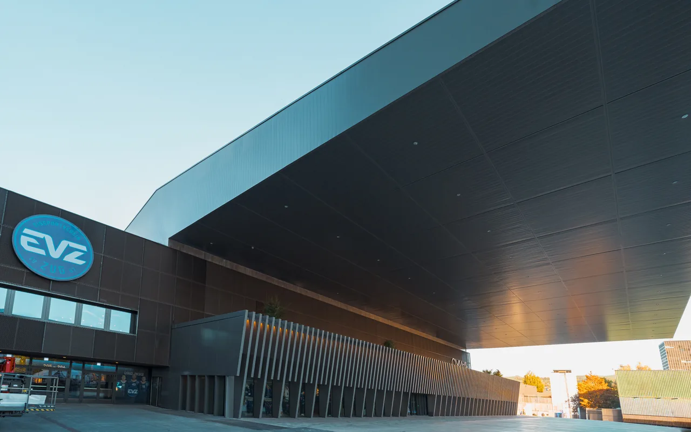
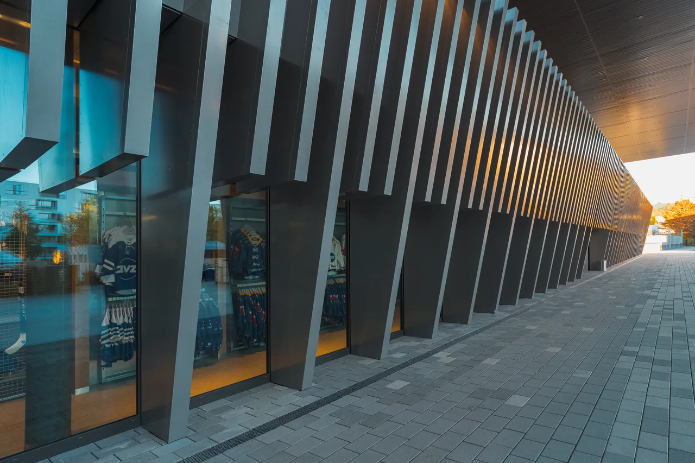
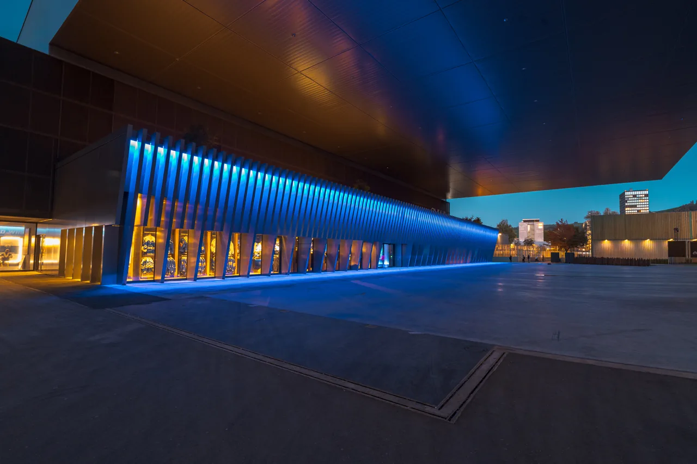
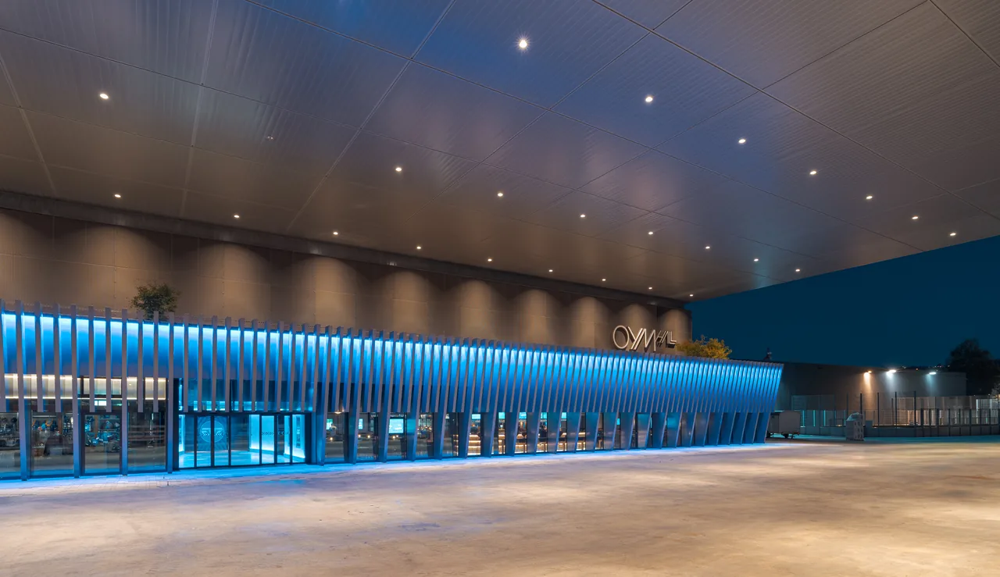
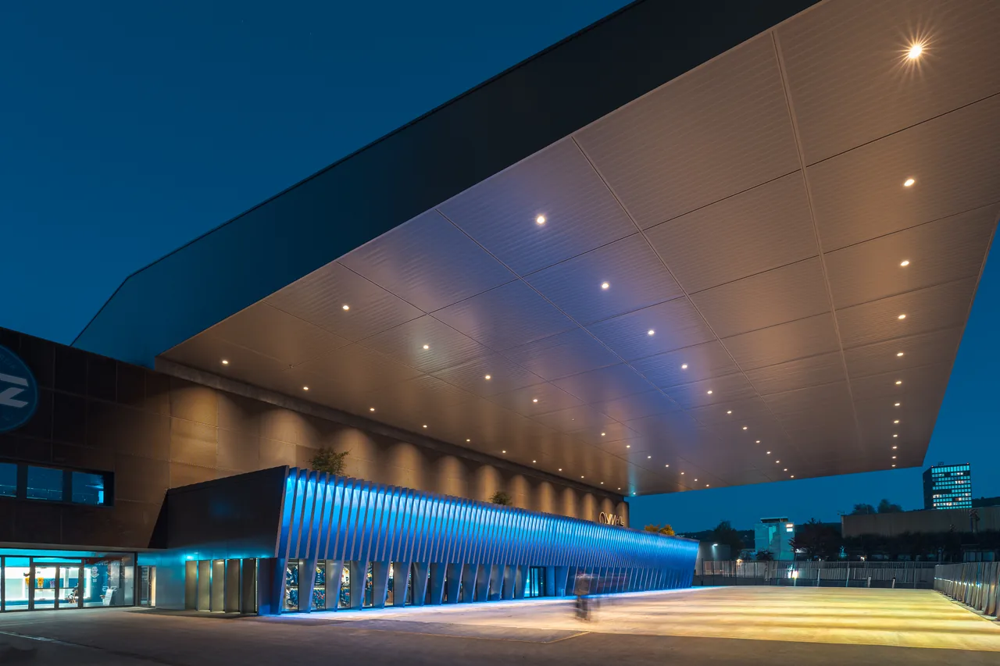

Vom Vorplatz zum lebendigen Stadtraum
Aufgrund der Erfahrungen der vergangenen Jahre lag die Herausforderung darin, die Aufenthaltsqualität auf dem Arenaplatz durch gezielte bauliche und betriebliche Massnahmen zu steigern. Die grossflächige Asphaltfläche leistete bisher einen zu geringen Beitrag an einen lebendigen Stadtplatz. Mit der Erweiterung Süd und einer zusätzlichen öffentlichen Nutzung im Erdgeschoss entsteht ein erster Impuls zur Belebung.
Bislang fehlte den Besuchern bei Veranstaltungen in der Arena eine gedeckte Zone, um sich vor dem Spiel zu treffen oder Schutz vor schlechter Witterung zu suchen. Durch die Entkopplung und Verschiebung des Aussen-Eisfeldes nach Süden entsteht unter dem grossen Hauptdach eine dringend benötigte Warte- und Begegnungszone. Diese lädt heute als neuer Treffpunkt zum Verweilen ein und optimiert zugleich die Zirkulation entlang der Südfassade.
Anstelle der alten, geschlossenen Stadionfassade öffnet sich der Baukörper neu im Erdgeschoss zum Platz hin: Der Erweiterungsbau beherbergt neue Nutzungen wie die Sportsbar 67, den Fanshop sowie eine neue Eingangszone, welche gezielt mit dem Platz interagieren. Der Eingriff in die bestehende Bausubstanz blieb dabei minimal und folgte dem Prinzip des Weiterbauens (keep building).
Ein weiteres Highlight ist der begrünte und attraktiv gestaltete Dachgarten der Erweiterung Süd. Mit einer individuellen Bepflanzung, Möblierung und einem gastronomischen Angebot lädt dieser Ort zum Verweilen ein und steht während den Spielpausen der Öffentlichkeit zur Verfügung.




